LearnXR Sales Dashboard Manual
How to find schools, work your leads, talk to them on WhatsApp, and keep an eye on the whole sales engine from one place.
Getting started
Sign in with your work email at agents.altiereality.com. The left sidebar shows only the pages your role can use. If a page is missing, ask an admin to change your role; roles can't be changed from inside the dashboard.
| Page | Superadmin | Associate | Salesperson | WhatsApp manager |
|---|---|---|---|---|
| Sales Home, Pipeline, School, Campaigns, Team, Customers | Yes | Yes | Yes | No |
| Messaging, Ops Dashboard | Yes | Yes | Yes | Yes |
| Social Ads | Yes | View | No | No |
| Admin (health and settings) | Yes | No | No | No |
| Builder (VR lessons) | Yes | Yes | No | No |
Every lead moves through the same stages. A stage is set either by the system (an email sent, a reply, a booking) or by you in the lead drawer.
New means found but not emailed yet. Contacted means the first email went out. Engaged means the school showed interest: a reply, a website or Instagram form, or a click on a demo or pricing link. From Engaged on, a person owns the deal.
Your daily routine
- Open Sales Home. Work the Due now list from the top. Overdue items are in red.
- Claim what you'll work. Press Claim on a lead so nobody else calls the same school.
- Call or WhatsApp. Use the buttons on the item. After a call, open the lead and press Log call with the outcome.
- Set the next step. Every open deal needs a next step and a due date, or it falls into No next step.
- Check Messaging for new school replies before you finish for the day.
Sales Home /sales
For everyone in sales. Your start page.
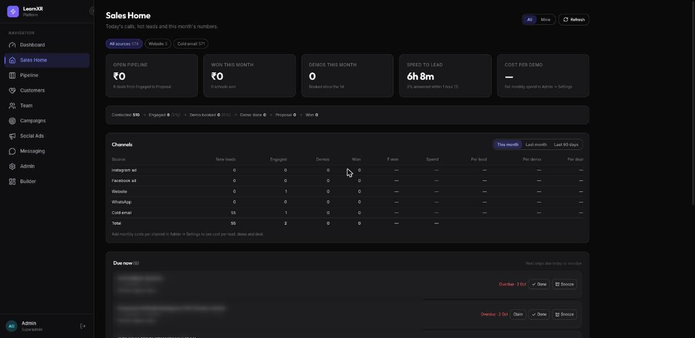
What's on it
- Source chips (All sources, Website, Cold email…) narrow the whole page to leads from one source. The number on each chip is how many leads came from it.
- Tiles: open pipeline value, won this month, demos booked this month, speed to lead (median time from a lead turning hot to the first call or message), and cost per demo.
- Funnel line: how many leads ever reached each stage, with the conversion from the step before.
- Channels: for each source, new leads, engaged, demos, won and ₹ won, for this month, last month or the last 90 days. Cost per lead, demo and deal appear once an admin enters monthly costs in Admin → Settings; Meta ad spend is added automatically.
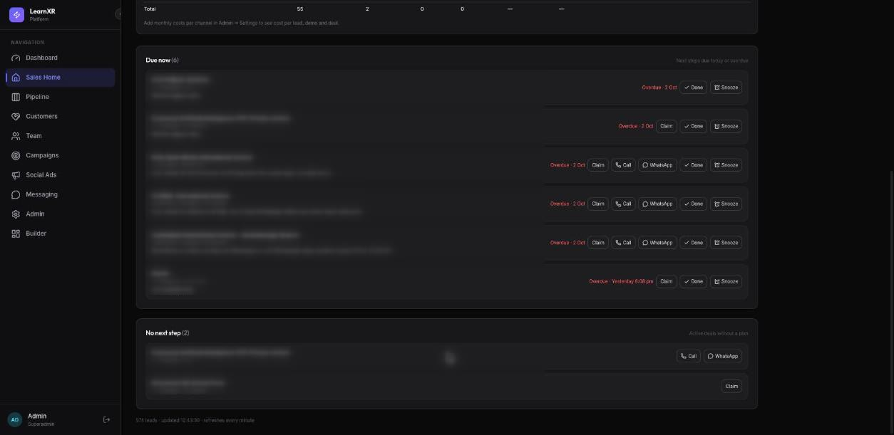
Working the queue
- Claim makes you the owner. It fails if a colleague claimed the lead a moment before you.
- Call opens your phone dialler and records a first touch. WhatsApp opens the chat in Messaging.
- Done clears the next step. Snooze moves it to tomorrow morning.
- All / Mine at the top switches between the team's queue and only your leads.
- Click a school's name to open its lead drawer.
The page refreshes every minute.
The lead drawer
Opens from Sales Home, Pipeline, the School page and Team.
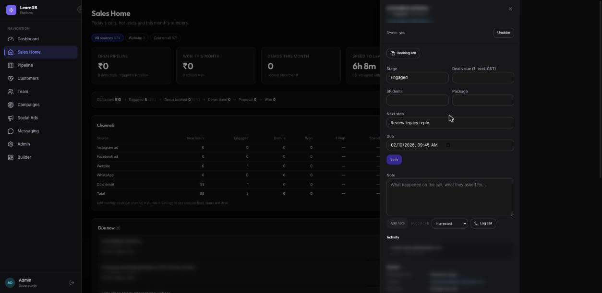
- Header: school, city, stage and source, plus a link to the School page with the full history.
- Claim / Unclaim: take or release ownership.
- Booking link: copies a demo booking link tied to this lead, so a booking is matched back to it.
- Stage, deal value, students, package: change them and press Save. Choosing Lost asks for a reason.
- Next step and due date: what happens next and when. This is what puts the lead on Sales Home at the right time.
- Note: type what happened and press Add note.
- Log call: pick the outcome (Interested, Call back later, Not interested, No answer, Wrong number) and press Log call. Anything typed in the note box is saved as the call's notes. Calls count on the Team leaderboard.
- Copy a reply template: appears when admins have added templates. Copies the text with the contact's name and school filled in.
- Activity: who changed what and when, newest first.
Pipeline /pipeline
For everyone in sales.
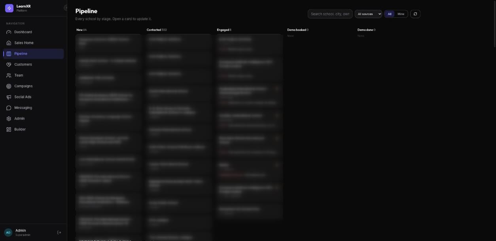
- Each column shows how many deals it holds and their total ₹ value.
- A flame marks a hot lead. A red date means the next step is overdue.
- Search by school, city or owner; filter by source; switch between All and Mine.
- Won and Lost are collapsed; press Show to expand them.
- Click a card to open its lead drawer and change its stage there.
School page /schools/…
Opened from the lead drawer link “School page and full timeline”.
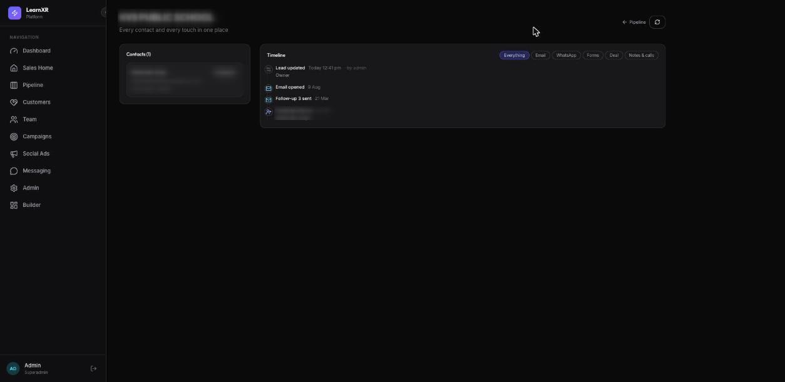
- Contacts: every person we have at this school (principal, coordinator…), grouped by email domain or phone number. Click one to open their drawer.
- Timeline: how the lead arrived, emails sent, opened and clicked, replies, WhatsApp messages both ways, notes and calls, stage changes, demo, proposal, won or lost, and unsubscribes. Filter with Email, WhatsApp, Forms, Deal or Notes & calls.
- Customer health appears once the school is Won. See Customers.
Read the timeline before you call. It tells you what the school has already seen from us.
Messaging /twilio-messaging
For sales and the WhatsApp manager. No screenshot here, because the page shows real conversations.
- Chats on the left: every WhatsApp conversation, newest first. Filter with Follow-up, Seen or Failed, or search a name or number. + starts a new chat.
- Conversation on the right, with the school's stage and owner, and Claim.
- Quick replies above the text box: the booking link, “ask for a call time”, and any templates an admin added.
Schools that reply STOP are blocked from further messages automatically.
Campaigns /sales-funnel
For everyone in sales. This is where new schools come from.
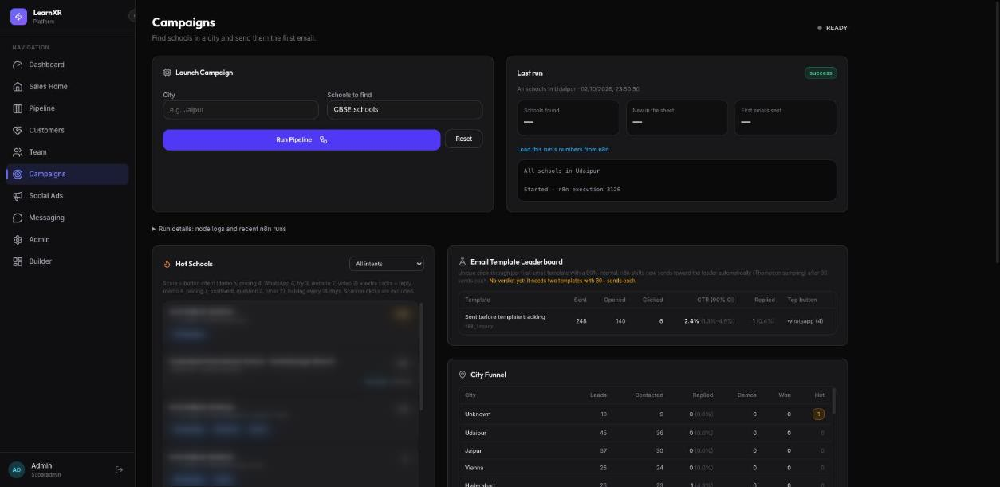
Running a city
- Type a City and pick Schools to find (CBSE, ICSE, IB, international or all).
- Press Run Pipeline. A run takes about 8 minutes.
- Behind the scenes, the run finds schools on Google Maps and drops junk and schools we already have. It then reads each school's website for a verified principal, email and an opening line, scores the fit, and adds the good ones to the sheet as New.
- The best fits get their first email right away, within the daily cap. Last run shows schools found, new in the sheet and first emails sent.
Reading the results
- Hot Schools: the schools clicking and replying most, scored by intent (demo and pricing clicks count most).
- Email Template Leaderboard: how each first-email version performs.
- City Funnel: leads, contacted, replied, demos and won per city.
Follow-up emails go out by themselves at 10:30 on Monday to Saturday. They are not listed under runs; their last run is shown as one line on this page.
Team /team
For everyone in sales.
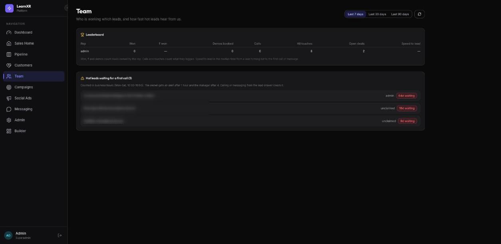
- Leaderboard for the last 7, 30 or 90 days: deals won and ₹, demos booked, calls, all touches (notes, calls, updates), open deals, and speed to lead.
- Hot leads waiting for a first call: how long each has waited in business time and who owns it. Calling or messaging from the drawer clears it.
Log every call with Log call; unlogged calls don't count.
Customers /customers
For everyone in sales. Empty until the first deal is marked Won.
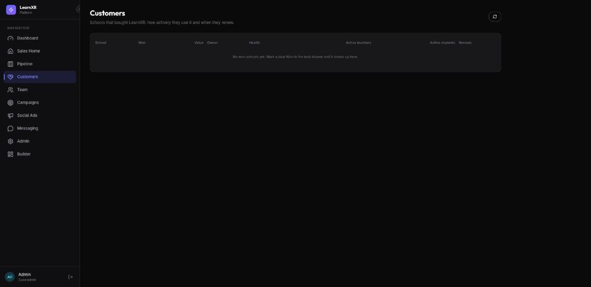
- Each won school is listed with its deal value and owner, its health (healthy, watch, at risk or not started), active teachers and students in the last 30 days, and its renewal date.
- The riskiest schools are listed first.
- Linking: on the school's page, the Customer health panel suggests the matching school in the LearnXR app. Press Link once to connect them.
- Renewal date defaults to a year after the deal was won; change it on the school page. Reminder emails go out 60, 30 and 7 days before.
Ops Dashboard /dashboard
For sales and the WhatsApp manager.
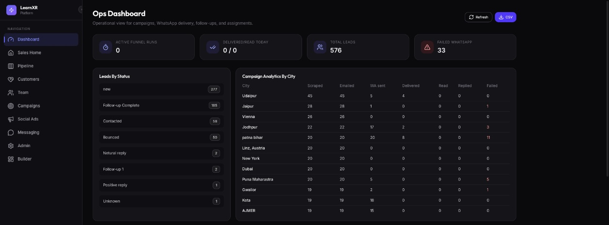
- Active runs, WhatsApp delivered and read today, total leads, failed WhatsApp sends.
- Leads by status, and per city: scraped, emailed, WhatsApp sent, delivered, read, replied, failed.
- Further down: overdue follow-ups, failed WhatsApp sends (with an Open chat link) and the audit log.
- CSV downloads the lead list.
Admin /admin
For superadmins only.
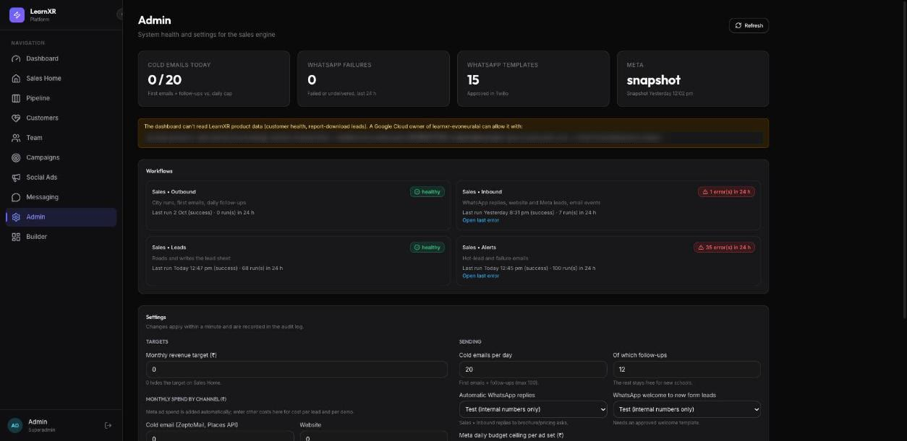
Health
- Cold emails sent today against the daily cap, WhatsApp failures in the last 24 hours, approved WhatsApp templates, and the Meta connection.
- One card per automation: Outbound (city runs, first emails, follow-ups), Inbound (replies, website and Meta leads, email events), Leads (reads and writes the lead sheet) and Alerts. A red card shows how many errors happened in the last day, with Open last error.
Settings
- Monthly revenue target and monthly cost per channel: these feed Sales Home and the Channels table.
- Cold emails per day and how many may be follow-ups. Keep this low while the sending domain is new.
- Automatic WhatsApp replies and WhatsApp welcome: Test sends only to internal numbers; Live sends to schools. Switching to Live asks you to confirm.
- Meta daily budget ceiling, alert recipients and reply templates (use
{{name}}and{{school}}).
Press Save settings. Changes reach the automations within a minute and are recorded in the audit log.
Builder /
For superadmins, associates and builders.
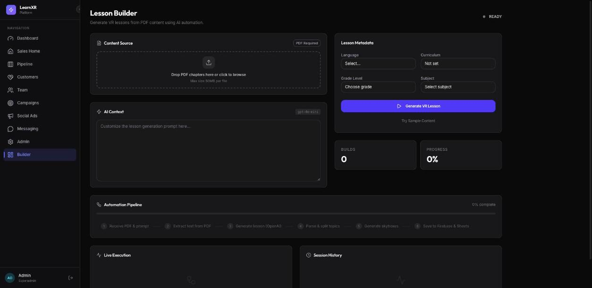
- Drop a PDF chapter (up to 50 MB) into Content Source.
- Optionally add instructions in AI Context.
- Choose language, curriculum, grade and subject.
- Press Generate VR Lesson and follow the steps in Automation Pipeline and Live Execution.
A sample lesson built for a prospect is a strong way to move a deal from Demo done to Proposal.
What runs by itself
| When | What happens | What you see |
|---|---|---|
| When you run a city | Schools found and checked, first emails sent within the cap | New and Contacted leads; Campaigns updates |
| Mon–Sat 10:30 | Follow-up emails 1–3 to schools that haven't replied | Follow-up counts on leads |
| As it happens | WhatsApp replies are read and classified; website and Instagram/Facebook form leads are added or matched to a school we already have | Lead becomes Engaged and hot; alert email |
| Every 15 minutes | Website contact-form messages and report downloads are checked for spam and added as leads | New website leads |
| Every 30 minutes, business hours | Hot leads with no call or message yet | Alert to the owner after 1 hour, the manager after 4 |
| Daily 9:30 | Customer renewals coming up | Reminder at 60, 30 and 7 days |
| Monday 9:00 | Weekly digest | Email: leads by source, overdue deals, waiting hot leads, team activity |
| When anything fails | Error report | Alert email with the failed step |
Rules to know
- Do not contact is permanent. A school that unsubscribes from email or replies STOP on WhatsApp is never messaged again, and you can't override it.
- One school, one row. If a school fills a form after we already emailed them, their existing lead is updated rather than duplicated. Check the School page for every contact.
- Milestones keep their first date. Hot, first touch, demo booked, demo done, proposal sent and won keep the date they first happened, so reports stay honest.
- Test rows: schools named “ZZ Test …” are for testing and are hidden from the dashboard.
- WhatsApp after 24 hours needs an approved template.
When something looks wrong
A page shows an error or stays empty
Press Refresh on the page. If it persists, an admin should check Admin → Health. A service-unavailable error across every page usually means a problem with the Google Cloud account, such as billing.
“Someone else has already claimed this lead”
A colleague claimed it first. Talk to them, or ask a superadmin to reassign it.
I can't type a WhatsApp message
The school's last message is older than 24 hours. Pick an approved template instead.
A school I emailed isn't on Sales Home
Sales Home only lists work that is due. Find any school in Pipeline by searching its name.
Numbers look off
Pages refresh every minute; the lead list itself is cached for up to a minute. Cost figures need monthly costs in Admin → Settings.
Social Ads /social
For superadmins and associates.
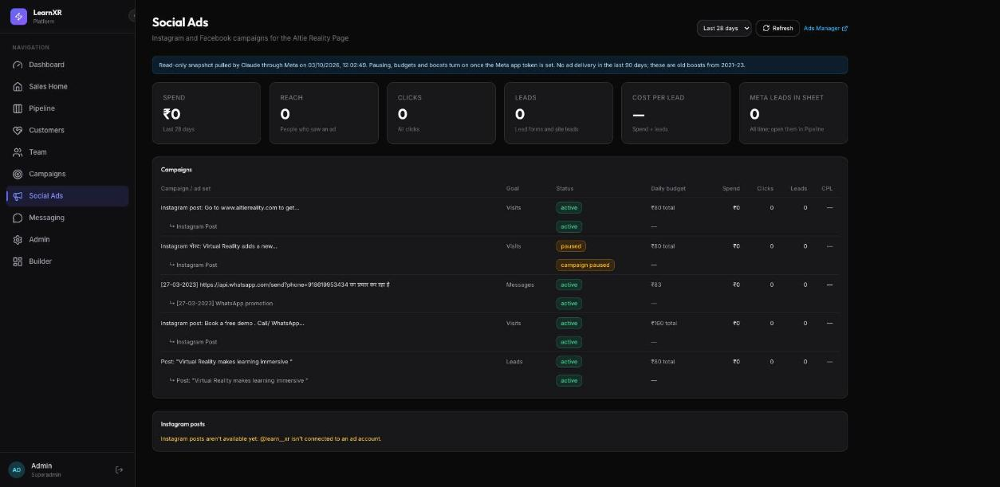